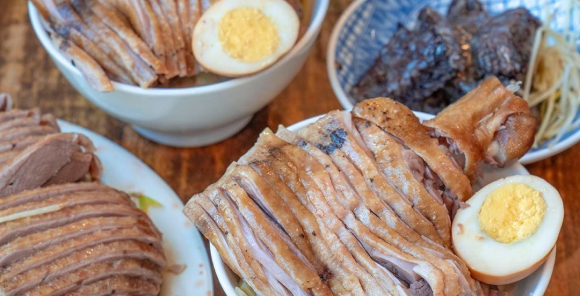
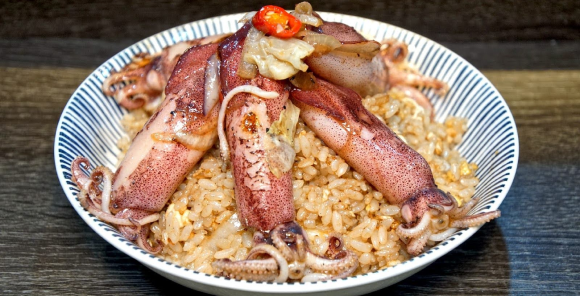
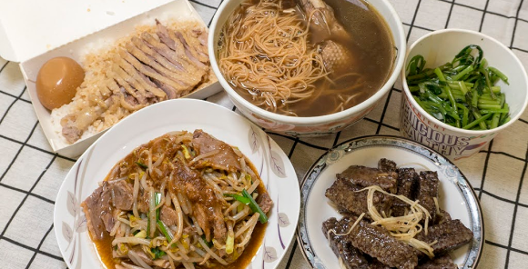

飯類

公 休 日：週三、週四
電 話：(06)223-7129
地 址：700台南市中西區民族路三段190號
鳳姐鴨肉飯
營業時間：11:00-18:30公 休 日：週三、週四
電 話：(06)223-7129
地 址：700台南市中西區民族路三段190號
👉白切鴨肉有夠好吃！！！
肉質很嫩，醬汁也很涮嘴🤤
重點是百元有找，不過偷偷說～雖然擺盤視覺效果很厲害，但是下面那層是幾乎都是骨頭的鴨架子XD
👉下水湯加了很多薑絲去腥，非當歸的湯頭也不錯～
但是料幾乎都是鴨肝，本來期待有別的內臟料～
肉質很嫩，醬汁也很涮嘴🤤
重點是百元有找，不過偷偷說～雖然擺盤視覺效果很厲害，但是下面那層是幾乎都是骨頭的鴨架子XD
👉下水湯加了很多薑絲去腥，非當歸的湯頭也不錯～
但是料幾乎都是鴨肝，本來期待有別的內臟料～
整體來說有夠ㄒㄧㄡˋ，CP值很高～
不管是不是觀光客都會想回訪的店，
鴨腿是每日限量，一開店就要去買，像波波沒點到留下遺憾就不好啦~
2020.09.11
不管是不是觀光客都會想回訪的店，
鴨腿是每日限量，一開店就要去買，像波波沒點到留下遺憾就不好啦~
2020.09.11

公 休 日：週六
電 話：0987-359-677
地 址：710台南市永康區大仁街207-4號
佑師絕鼎炒飯
營業時間：10:00-14:00 / 16:00-21:00公 休 日：週六
電 話：0987-359-677
地 址：710台南市永康區大仁街207-4號
👉火爆小卷炒飯$100（好像會加蔥段但我說不要）
小卷超級嫩超級新鮮！一咬就會斷但不到軟爛，口感剛好那種😳
他的炒飯粒粒分明，然後偏濕又沒有多餘醬汁拌得很勻，
醬汁味道就是台南鱔魚意麵鹹甜鹹甜，卻不死鹹也不過甜！
整體下來我蠻喜歡的！雖然每一口味道都一樣但不會膩，
明明就沒有特別喜歡鱔魚意麵但改成炒飯又蠻能接受的！
小卷超級嫩超級新鮮！一咬就會斷但不到軟爛，口感剛好那種😳
他的炒飯粒粒分明，然後偏濕又沒有多餘醬汁拌得很勻，
醬汁味道就是台南鱔魚意麵鹹甜鹹甜，卻不死鹹也不過甜！
整體下來我蠻喜歡的！雖然每一口味道都一樣但不會膩，
明明就沒有特別喜歡鱔魚意麵但改成炒飯又蠻能接受的！
親眼看到老闆用大火炒小卷跟炒飯！所謂鍋氣~
這裡離市區算有點距離，但買完馥貴春蠻順路的！
這家店內用位子是半開放所以我受不了外帶回去配冷氣
2020.6.27
這裡離市區算有點距離，但買完馥貴春蠻順路的！
這家店內用位子是半開放所以我受不了外帶回去配冷氣
2020.6.27

公 休 日：週日
電 話：(06)209-4977
地 址：701台南市東區東安路1號
鴨霸
營業時間：10:00-21:30公 休 日：週日
電 話：(06)209-4977
地 址：701台南市東區東安路1號
👉鴨肉飯$55
50以上的飯類都會附滷蛋，不要蛋的話可以減五塊
滿滿的鴨肉塊鋪在飯盒裡，滷汁也是不客氣地撈一大匙，
讓飯都吸附醬汁後，再把多餘的汁倒掉，
最畫蛇點睛的就是附上的蘿蔔乾，入味又不死鹹，
扒飯一口接著一口！
50以上的飯類都會附滷蛋，不要蛋的話可以減五塊
滿滿的鴨肉塊鋪在飯盒裡，滷汁也是不客氣地撈一大匙，
讓飯都吸附醬汁後，再把多餘的汁倒掉，
最畫蛇點睛的就是附上的蘿蔔乾，入味又不死鹹，
扒飯一口接著一口！
講到鴨霸，成大學生一定不陌生，
主打當歸鴨但波波在不特別餓又想吃肉的時候一定會來光顧鴨肉飯！
便宜又好吃ㄚㄚㄚ所謂省荷包又不犧牲口腹之慾
但男生可能會吃不飽，可以加點小菜呦~
主打當歸鴨但波波在不特別餓又想吃肉的時候一定會來光顧鴨肉飯！
便宜又好吃ㄚㄚㄚ所謂省荷包又不犧牲口腹之慾
但男生可能會吃不飽，可以加點小菜呦~